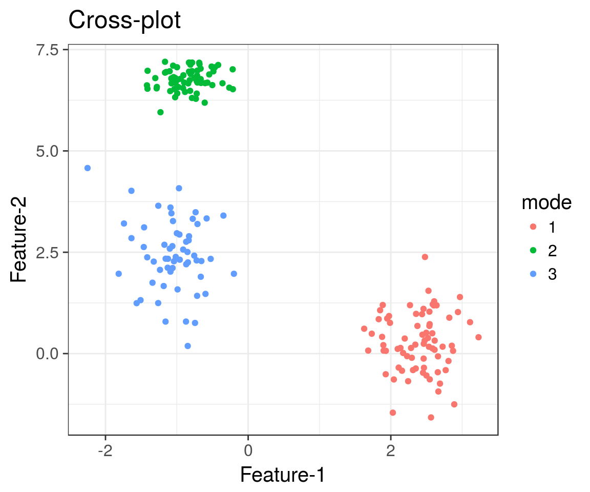
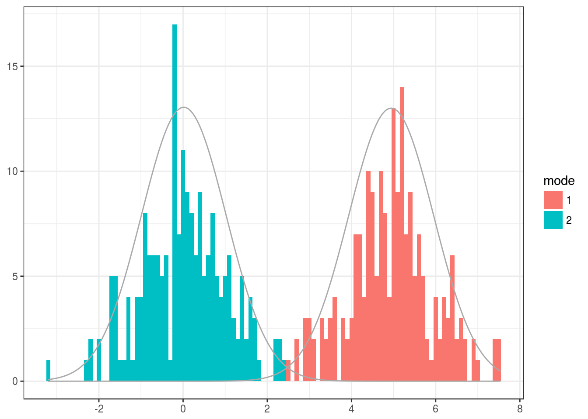
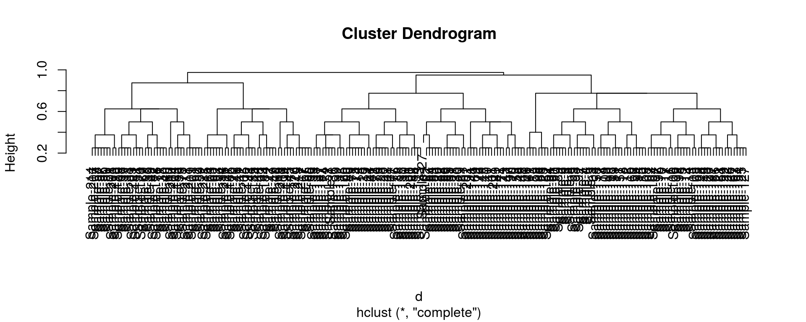

Fit and visualize Variational Dirichlet process multivariate infinite Gaussian mixture. This variational version has been partially written in C and it is relatively fast. Kindly cite this article. Note that the implementation uses diagonal covariances on the Gaussian modes. The C code was partially derived from Honkela et al. 2008.
library(netresponse)
# Generate simulated data
res <- generate.toydata(Dim = 2)
D <- res$data
component.means <- res$means
component.sds <- res$sds
# Fit the mixture
m <- mixture.model(D, mixture.method = "vdp", pca.basis = FALSE)
# Plot the data, and indicate estimated modes with colors.
# If data dimensionality exceeds 2,
# the results are visualized on PCA projection
# (with pca.basis = TRUE the data is projected on PCA coordinates;
# without loss of information. This trick can help to avoid overlearning
# as the variational mixture relies
# on diagonal covariance matrices, so the ellipsoidal axes of the
# Gaussian modes are parallel to the coordinate axes.)
p <- PlotMixtureMultivariate(D, means = m$mu, sds = m$sd, ws = m$w, modes = apply(m$qofz,1,which.max))
Fit and visualize Variational Dirichlet process univariate infinite Gaussian mixture. Kindly cite this article for the code.
# Generate simulated bimodal univariate data
x <- c(rnorm(200), rnorm(200, mean = 5))
# Variational Dirichlet process univariate Gaussian mixture
m <- mixture.model(x, mixture.method = "vdp", max.responses = 10)
# Plot the data and estimated modes
p <- PlotMixtureUnivariate(x, means = m$mu, sds = m$sd, ws = m$w, binwidth = 0.1, qofz = m$qofz)
print(p)
Gower distance is useful for samples with mixed-type variables (binary, factor, numeric)):
# Example data
data("dietswap")
library(FD)
d <- gowdis(as(sample_data(dietswap), "data.frame"))
plot(hclust(d))
## [1] "ade4"
## [1] "compositions"
## [1] "MASS"
## [1] "moments"
## [1] "scales"
## [1] "tgp"
## [1] "WGCNA"
## [1] "diptest"
## [1] "FD"
## [1] "gcookbook"
## [1] "GGally"
## [1] "ggnet"
## [1] "Hmisc"
## [1] "hrbrthemes"
## [1] "igraph"
## [1] "intergraph"
## [1] "limma"
## [1] "lme4"
## [1] "netresponse"
## [1] "network"
## [1] "RColorBrewer"
## [1] "sna"
## [1] "SpiecEasi"
## [1] "tidyverse"
## [1] "viridis"